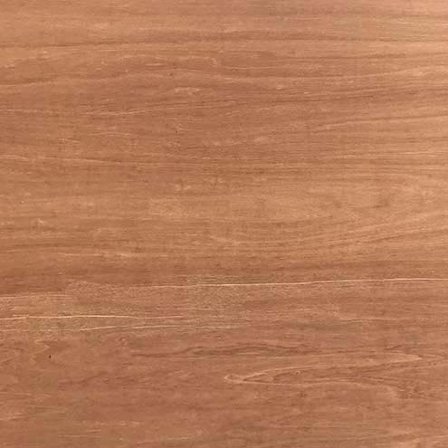
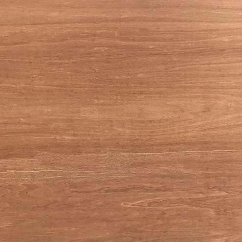

1. Substance. Substance is defined as that which neither can be predicated of anything nor be said to be in anything. Hence, this particular man or that particular tree are substances. Aristotle calls these particulars “primary substances”, to distinguish them from secondary substances, which are universals and can be predicated. Hence, Socrates is a primary substance, while man is a secondary substance. Man is predicated of Socrates, and therefore all that is predicated of man is predicated of Socrates.
2. Quantity. This is the extension of an object, and may be either discrete or continuous. The spatial extension of an object's essential nature (one woman; three books). Some quantities consist of discrete parts (speech; mathmatics) and some are continuous (time and space; a straight line).
3. Quality. This characterizes the inherent nature of an object, in habit or disposition.
4. Relation. This is the way in which one object may be related to another. To be 'greater than' or 'more important than' is in reference to something outside of it. 'Slave' implies master; 'double' relates to its other half; 'expert' implies a skill or body of knowledge.
5. Place. Position in relation to the surrounding environment.
6. Time. Position in relation to the course of events.
7. Position. A state of rest resulting from an action; a posture (laying, sitting). Position may be the end point for the corresponding action (thrown). The term can mean the relative position of the parts of an object, by angle or state of rest.
8. State. The examples Aristotle gives indicate that he meant a condition of rest resulting from an affection (i.e. being acted on): ‘shod’, ‘armed’. The physical condition of an object as the result of an action: 'a tired traveller'; 'an outdated idea.'
9. Action. The production of change in some other object: 'to make angry;' 'to diplace' 'to sweeten.'
10. Affection. The reception of change from some other object. Action is to affection as the active voice is to the passive. Thus for action he gave the example, ‘to lance’, ‘to cauterize’; for affection, ‘to be lanced’, ‘to be cauterized.’ The term is frequently misinterpreted to mean a kind of emotion or passion.

 
